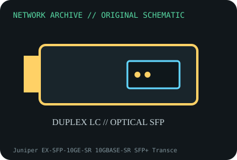

[ MODEL-SPECIFIC NETWORK HARDWARE ]
Juniper EX-SFP-10GE-SR 10GBASE-SR SFP+ Transceiver
Juniper-coded 850nm short-range 10GbE optic for multimode fiber. Confirm exact product label and revision before applying specifications.

IDENTIFICATION: Confirm manufacturer PID, hardware revision, device ID or module suffix. Nominal standards/link rates are not measurements of payload performance.
Exact specifications and compatibility
| Dedicated subcategory | SFP transceivers: optical and copper |
|---|---|
| Exact product/model | Juniper EX-SFP-10GE-SR 10GBASE-SR SFP+ Transceiver |
| Bus, ports and physical interface | SFP+ module with duplex LC; qualified Juniper EX/QFX/SRX slot as specified in compatibility guide. |
| PHY, radio or protocol | 10GBASE-SR over 850nm MMF; reach depends on OM fiber grade and host/product generation. |
| Nominal rate (not measured) | 10Gb/s nominal Ethernet line rate; optical reach and throughput are distinct. |
| Measured throughput | No measured benchmark is claimed for a physical specimen. A valid result must record host/peer, link partner, media/cable, driver/firmware, traffic pattern, test tool and duration. |
| Drivers, OS and firmware | No client driver; Juniper Junos and hardware compatibility determine recognition, DOM and supported platform use. |
| Compatibility | Use duplex MMF and verify exact Juniper platform/release support in Hardware Compatibility Tool; validate far-end module and fiber. |
| Variant warning | Juniper EX-SFP-10GE-SR product code is distinct from JNP-SFP-10G-SR and coded third-party modules. Similar SR label does not guarantee Junos qualification. |
Model and revision notes
Juniper EX-SFP-10GE-SR product code is distinct from JNP-SFP-10G-SR and coded third-party modules. Similar SR label does not guarantee Junos qualification.
No client driver; Juniper Junos and hardware compatibility determine recognition, DOM and supported platform use.
Use duplex MMF and verify exact Juniper platform/release support in Hardware Compatibility Tool; validate far-end module and fiber.
Archival, ESD and preservation notes
Log full part number, serial, DOM, Junos version and fiber plant. Clean/cap LC and store in ESD-safe transceiver case.
Document source URL, access date, document revision and specimen label/condition. Preserve without credentials or private configuration.
Primary manufacturer and standards sources
- Juniper EX-SFP-10GE-SR Hardware Compatibility Tool specificationsPrimary manufacturer or standards documentation; verify exact SKU and host revision.
- Juniper Hardware Compatibility ToolPrimary manufacturer or standards documentation; verify exact SKU and host revision.
- IEEE 802.3 Ethernet standardsPrimary manufacturer or standards documentation; verify exact SKU and host revision.
Manufacturer statements cover the named part or its documented product family; the exact labeled revision and vendor compatibility list take precedence.